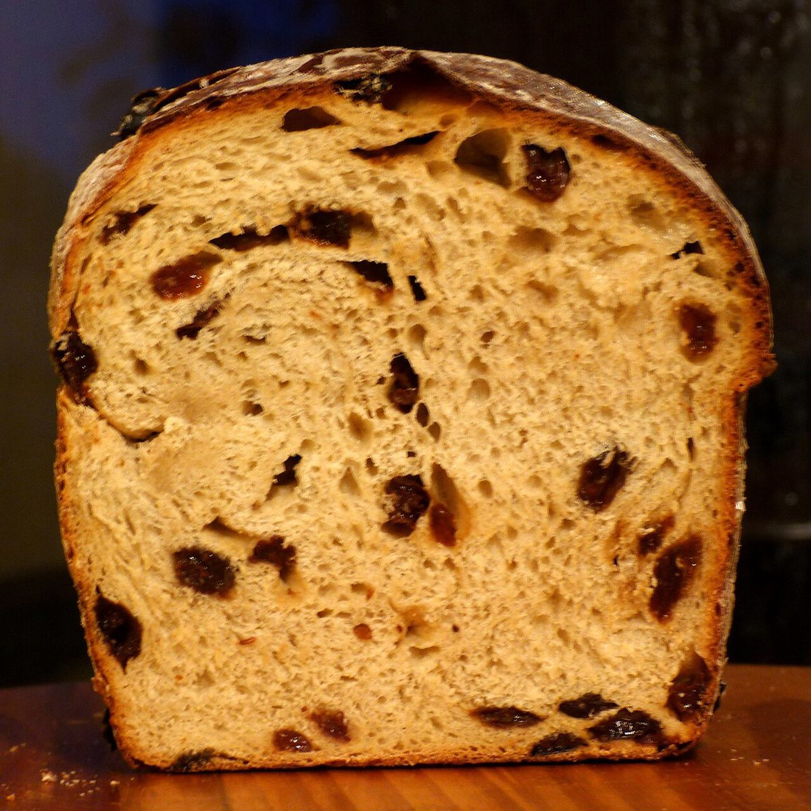
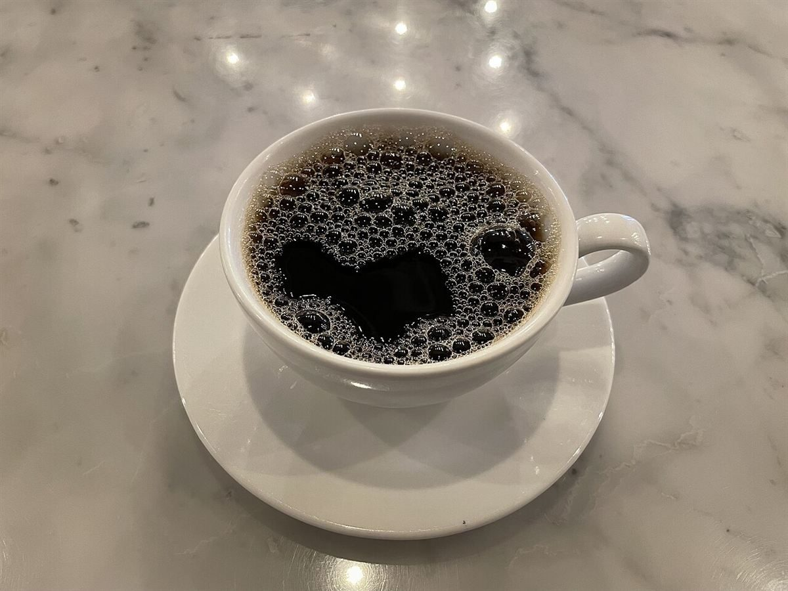

あやとりの形 「はしご」
メニュー
メニュー
メニューと価格は準備中です。確認でき次第、こちらに掲載します。
- 1メニュー準備中
- 2価格準備中
- 3ご予約準備中
- 4駐車場準備中
- 5営業時間準備中
下の写真は、パンやカフェまわりの雰囲気を伝えるためのフリー素材で、お店で提供しているものではありません。提供メニューを示すものでもありません。




メニュー
メニューと価格は準備中です。確認でき次第、こちらに掲載します。
下の写真は、パンやカフェまわりの雰囲気を伝えるためのフリー素材で、お店で提供しているものではありません。提供メニューを示すものでもありません。

